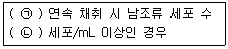

수질환경산업기사 (2017-05-07 기출문제)
1과목: 수질오염개론
1. 암모니아성 질소 42mg/L와 아질산성 질소 14mg/L가 포함된 폐수를 완전 질산화 시키기 위한 산소요구량(mg O2/L)은?
- 135
- 174
- 208
- 232
(정답률: 56%)

2. 수중의 질소순환과정의 질산화 및 탈질의 순서를 옳게 표시한 것은?
- NH3 → NO2 → NO3→ N2
- NO3 → NH3 → NO2 → N2
- NO3 → N2 → NH3 → NO2
- N2 → NH3 → NO3 → NO2
(정답률: 89%)
3. 96TLm은 NH3＝2.5mg/L, Cu2+＝1.5mg/L, CN-＝0.2mg/L이고, 실제 시험수의 농도가 CU2+＝0.6mg/L, CN-＝0.01mg/L, NH3＝0.4mg/L이였다면, Toxic Unit는?
- 0.25
- 0.61
- 1.23
- 1.52
(정답률: 61%)
4. Streeter-Phelps 모델에 관한 내용으로 옳지 않은 것은?
- 최초의 하천 수질 모델링이다.
- 유속, 수심, 조도계수에 의한 확산계수를 결정한다.
- 점오염원으로부터 오염부하량을 고려한다.
- 유기물의 분해에 따라 용존산소 소비와 재폭기를 고려한다.
(정답률: 71%)
5. 물의 물리적 특성에 관한 설명 중 옳은 것은?(오류 신고가 접수된 문제입니다. 반드시 정답과 해설을 확인하시기 바랍니다.)
- 비열이 커지면 물의 당량도 커진다.
- 증기압은 온도가 높을수록 낮아진다.
- 물의 점성계수는 온도가 증가하면 높아진다.
- 물의 표면장력은 온도가 증가하면 높아진다.
(정답률: 70%)
6. 20℃ 5일 BOD가 50mg/L인 하수의 2일 BOD(mg/L)는? (단, 20℃, 탈산소계수 k＝0.23day-1이고, 자연대수 기준)
- 21
- 24
- 27
- 29
(정답률: 79%)
7. 적조의 발생에 관한 설명으로 옳지 않은 것은?
- 정체해역에서 일어나기 쉬운 현상이다.
- 강우에 따라 오염된 하천수가 해수에 유입될 때 발생될 수 있다.
- 수괴의 연직 안정도가 크고 독립해 있을 때 발생한다.
- 해역의 영양 부족 또는 염소농도 증가로 발생된다.
(정답률: 83%)
8. 유기성 폐수에 관한 설명 중 옳지 못한 것은?
- 유기성 폐수의 생물학적 산화는 수서 세균에 의하여 생산되는 산소로 진행되므로 화학적 산화와 동일하다고 할 수 있다.
- 생물학적 처리의 영향 조건에는 C/N비, 온도, 공기 공급정도 등이 있다
- 유기성 폐수는 C, H, O를 주성분으로 하고 소량의 N, P, S 등을 포함하고 있다.
- 미생물이 물질대사를 일으켜 세포를 합성하게 되는데 실제로 생성된 세포량은 합성된 세포량에서 내 호흡에 의한 감량을 뺀 것과 같다.
(정답률: 69%)
9. 0.4g 녹인 화합물 수용액이 있다. 이 화합물에 있는 Cl-이온을 완전히 반응시키는데 0.1M-AgNO3 35mL가 소모되었다. 화합물에 함유된 Cl-의 함량(%)은? (단, Cl의 원자량＝35.5)
- 15.5
- 31.0
- 61.0
- 82.0
(정답률: 56%)
10. 수화현상(water bloom)이란 정체수역에서 식물플랑크톤이 대량 번식하여 수표면에 막층 또는 플록(floc)을 형성하는 현상을 말하는데, 이의 발생원이 아닌 것은?
- 유기물 및 질소, 인 등 영양염류의 다량 유입
- 여름철의 높은 수온
- 긴 체류시간
- 수층의 순환
(정답률: 77%)
11. 지하수의 특성을 지표수와 비교해서 설명한 것으로 옳지 않은 것은?
- 경도가 높다.
- 자정작용이 빠르다.
- 탁도가 낮다.
- 수온변동이 적다.
(정답률: 83%)
12. 미생물의 증식곡선의 단계 순서로 옳은 것은?
- 대수기 - 유도기 - 정지기 - 사멸기
- 유도기 - 대수기 - 정지기 - 사멸기
- 대수기 - 유도기 - 사멸기 - 정지기
- 유도기 - 대수기 - 사멸기 - 정지기
(정답률: 83%)
13. 응집처리시 응집의 원리와 가장 거리가 먼 것은?
- Zeta potential을 감소시킨다.
- Van der Waals힘을 증가시킨다.
- 응집제를 투여하여 입자끼리 뭉치게 한다.
- 콜로이드입자의 표면전하를 증가시킨다.
(정답률: 62%)
14. 수질오염에 의한 벼농사의 피해에 관한 설명으로 잘못된 것은?
- 논에 다량의 유기물을 함유한 폐수가 유입되면 토양이 환원상태로 되어 피해를 발생한다.
- 논의 토양이 산성화되면, 토양 중의 중금속의 일부가 용해하여 벼에 흡수되어 생육을 저해한다.
- 염류농도가 낮은 폐수가 유입되면 세포의 원형질에 나쁜 영향을 끼쳐 수확량이 감소한다.
- 콜로이드상의 미립자를 함유한 폐수가 과도하게 유입되면 토양입자를 고결시켜 침투성이 악화된다.
(정답률: 71%)
15. 유해물질과 그에 따른 증상 및 질병의 연결이 잘못된 것은?
- 카드뮴 - 골연화증
- 시안 - 호흡효소작용 저해
- 유기인화합물 - Cholinesterase 저해
- 6가크롬 - 흑피증, 각화증
(정답률: 72%)
16. 하천수 수온은 10℃이다. 20℃ 탈산소계수 K(상용 대수)가 0.1day-1이라면 최종 BOD와 BOD4의 비(BOD4/BODu)는? (단, KT＝K2O×1.047(T-20))
- 0.75
- 0.64
- 0.52
- 0.44
(정답률: 62%)
17. 황산바륨 포화용액에 염화바륨을 첨가하여 침전을 유도하는 방법으로 가장 관계가 깊은 것은?
- 공통이온효과
- 상승작용
- 완충작용
- 이종이온효과
(정답률: 69%)
18. 해수의 탁도에 관한 설명으로 옳지 않은 것은?
- 해수의 탁도는 용존 착색물질이나 무기 및 유기물질로 이루어진 미립자와 플랑크톤과 같은 미생물이 포함된 현탁입자가 그 원인이 된다.
- 흐려진 해수의 경우는 현탁입자에 의하여 적색광선이 선택적으로 산란되므로 투과광선의 극대 스펙트럼은 550nm에서 최대의 투과를 나타낸다.
- 수중의 빛은 수중조도 또는 직경 3cm의 자색원판인 투명도판으로 측정한다.
- 수중조도는 플랑크톤이나 해조류의 광합성에 필요한 빛에너지 도착심도를 결정하는 데 중요한 의미를 가진다.
(정답률: 57%)
19. pH＝4.5인 물의 수소이온농도(M)는?
- 약 3.2×10-5
- 약 5.2×10-5
- 약 3.2×110-4
- 약 5.2×10-4
(정답률: 74%)
20. 하천의 자정능력은 통상 겨울보다 여름이 더 활발하다. 그 원인 중 올바르게 설명된 것은?
- 여름의 높은 온도는 박테리아의 성장을 촉진시키기 때문이다.
- 여름에는 겨울보다 물속에 용존산소가 많기 때문이다.
- 여름에는 유량이 많고 유기물이 적기 때문이다.
- 여름에는 겨울보다 살균작용이 크기 때문이다.
(정답률: 70%)
2과목: 수질오염방지기술
21. 유량이 1,000m3/day, 포기조내의 MLSS 농도가 4,500mg/L이며 포기시간은 12hr, 최종 침전지에서 25m3/day의 잉여슬러지를 인발한다. 잉여슬러지의 농도는 20,000mg/L이며, 방류수의 SS를 무시한다면 슬러지 체류시간(day)은?
- 4.5
- 9.0
- 12.5
- 15.0
(정답률: 54%)
22. Zeolite로 중금속을 제거하려고 한다. 반응탑직경 2m, 폐수의 통과량 200m3/hr일 때 선속도(m3/m2ㆍhr)는?
- 약 150
- 약 120
- 약 96
- 약 64
(정답률: 61%)
23. 슬러지 처리의 목표가 아닌 것은?
- 부피의 감소
- 중금속 제거
- 안정화
- 병원균 제거
(정답률: 72%)
24. 활성슬러지법에 의한 폐수처리의 운전 및 유지관리상 가장 중요도가 낮은 사항은?
- 포기조 내의 수온
- 포기조에 유입되는 폐수의 용존산소량
- 포기조에 유입되는 폐수의 pH
- 포기조에 유입되는 폐수의 BOD 부하량
(정답률: 69%)
25. 회전원판법(RBC)에 관한 설명으로 틀린 것은?
- 산소공급이 필요 없어 소요전력이 적고 높은 슬러지일령이 유지된다.
- 여재는 전형적으로 약 40% 정도가 물에 잠기도록 한다.
- 타 생물학적 처리공정에 비하여 scale-up 시키기 어렵다.
- 유입수는 스크린이나 침전과정 없이 여재에 바로 접촉시켜 처리 효율을 높인다.
(정답률: 63%)
26. 포기조 내의 MLSS가 4,000mg/L, 포기조 용적이 500m3인 활성슬러지 공정에서 매일 25m3의 폐 슬러지를 인발하여 소화조에서 처리한다면 슬러지의 평균체류시간(day)은? (단, 반송슬러지의 농도 20,000mg/L, 유출수의 SS 농도는 무시)
- 2
- 3
- 4
- 5
(정답률: 77%)
27. 환경에 잠재적으로 독성이 있는 염소 잔류물의 영향을 최소화하기 위해 염소 살균된 하수로부터 염소를 제거하는데 이용되는 탈염소공정에 대한 설명으로 틀린 것은?
- 이산화황과 염소의 원활한 접촉을 위해 충분한 접촉시간과 접촉조가 필요하다.
- 이산화황을 과잉 주입하게 되면 약품 낭비뿐만 아니라 산소요구량도 많아지게 된다.
- 활성탄을 이용한 공정은 유기물질의 고도제거가 동시에 필요한 경우 더 타당하다.
- 이산화황을 이용한 공정에서 염소 잔류물과 반응하는 이산화황의 실제 요구량은 1：1이다.
(정답률: 46%)
28. 도금공정에서 발생되는 폐수의 6가 크롬 처리에 가장 알맞은 방법은?
- 오존산화법
- 알칼리염소법
- 환원처리법
- 활성슬러지법
(정답률: 74%)
29. 질산화 미생물에 대한 설명으로 옳은 것은?
- 혐기성이며 독립영양성 미생물
- 호기성이며 독립영양성 미생물
- 혐기성이며 종속영양성 미생물
- 호기성이며 종속영양성 미생물
(정답률: 68%)
30. 혐기성 소화의 특징으로 옳지 않은 것은?
- 발생되는 슬러지의 양이 작다.
- 부패성 유기물을 분해하여 안정화 시킨다.
- 질소, 인 등의 영양염류 제거 효율이 높다.
- 고농도 폐수처리에 적당하다.
(정답률: 55%)
31. 질소가 없는 공장의 폐수 유량과 BOD 농도가 각각 1,000m3/day, 600mg/L일 때, 활성슬러지 처리를 위해서 필요한 (NH4)2SO4의 양(kg/day)은? (단, BOD：N：P＝100：5：1이라 가정)
- 111
- 121
- 131
- 141
(정답률: 57%)
32. 폐수를 염소 처리하는 목적으로 가장 거리가 먼 것은?
- 살균
- 탁도 제거
- 냄새 제거
- 유기물 제거
(정답률: 74%)
33. 보통 1차침전지에서 부유물질의 침강속도가 작게 되는 경우는? (단, Stokes 법칙 적용)
- 부유물질 입자의 밀도가 클 경우
- 부유물질 입자의 입경이 클 경우
- 처리수의 밀도가 작을 경우
- 처리수의 점성도가 클 경우
(정답률: 83%)
34. 활성슬러지공법 포기조의 MLSS 농도를 2,500mg/L로 유지하려면 SVI가 150인 경우 슬러지 반송비(R)는?
- 0.50
- 0.55
- 0.60
- 0.65
(정답률: 66%)
35. 생물학적으로 하수 내 질소와 인을 동시에 제거할 수 있는 고도처리공법인 혐기-무산소-호기조합법에 관한 설명으로 틀린 것은?
- 방류수의 인 농도를 안정적으로 확보할 필요가 있는 경우에는 호기 반응조의 말단에 응집제를 첨가할 설비를 설치하는 것이 바람직하다.
- 인을 효과적으로 제거하기 위해서는 일차침전지 슬러지와 잉여슬러지의 농축을 분리하는 것이 바람직하다.
- 혐기조에서는 인 방출, 호기조에서는 인의 과잉섭취현상이 발생한다.
- 인제거율 또는 인제거량은 잉여슬러지의 인방출률과 수온에 의해 결정된다.
(정답률: 56%)
36. 하수처리시설 1차 침전지(clarifier)의 운전 시 지켜야 할 조건으로 틀린 것은?
- 침전지 수면의 여유고는 1.5m 이상으로 하여야 한다.
- 체류시간은 2∼4시간 정도가 적당하다.
- 표면부하율은 합류식의 경우 25∼50m3/m2ㆍday로 유지한다.
- 월류위어의 부하율은 일반적으로 250m3/mㆍday 이하로 한다.
(정답률: 53%)
37. 하수처리를 위한 생물학적 처리방법 중 미생물 성장 방식이 다른 것은?
- 활성슬러지법
- 살수여상법
- 회전원판법
- 접촉산화법
(정답률: 56%)
38. BOD 200mg/L, 유량 2,000m3/day인 폐수를 표준 활성슬러지법으로 처리하고자 한다. 포기조의 폭 5m, 길이 10m, 유효 깊이 4m일 때 용적부하(kg BOD/m3ㆍday)는?
- 1.5
- 2.0
- 2.5
- 3.0
(정답률: 77%)
39. 하수의 pH조정조에 대한 내용으로 틀린 것은?
- 체류시간은 10∼15분을 기준으로 한다.
- 교반 속도는 약품의 혼합과 단락류의 현상을 방지하기 위하여 통상 20∼80rpm의 범위로 운전한다.
- 조의 형태는 사각형 및 원형으로 한다.
- 조정조의 교반강도는 속도경사(G)로 300∼1,500m/s로 급속교반한다.
(정답률: 53%)
40. 미생물이 분해 불가능한 유기물을 제거하기 위하여 흡착제인 활성탄을 사용하였다. COD가 56mg/L인 원수에 활성탄 20mg/L를 주입시켰더니 COD가 16mg/L으로, 활성탄 52mg/L를 주입시켰더니 COD가 4mg/L로 되었다. COD 9mg/L로 만들기 위해 주입되어야 할 활성탄 양(mg/L)은? (단, Freundlich 등온공식：이용)
- 31.3
- 36.3
- 41.3
- 46.3
(정답률: 45%)
3과목: 수질오염공정시험방법
41. 자외선/가시선분광법으로 측정하지 않는 항목은?
- 유기인
- 페놀류
- 불소
- 시안
(정답률: 47%)
42. 시료의 보존방법이 4℃ 이하 보관에 해당되지 않는 측정항목은?
- 유기인
- 6가 크롬
- 황산이온
- 폴리클로리네이티드비페닐(PCB)
(정답률: 64%)
43. 공장 폐수의 BOD를 측정하기 위해 검수 30mL를 취한 다음 물 270mL를 BOD병에 취하였다. 20℃에서 5일간 방치한 후 다음과 같은 결과를 얻었다면 이 공장 폐수의 BOD(mg/L)는? (단, 초기 용존산소량＝8.0mg/L, 5일 후의 용존산소량＝4.0mg/L)
- 40
- 36
- 24
- 12
(정답률: 45%)
44. 이온전극법과 관련된 설명으로 틀린 것은?
- 시료 중 분석대상 이온의 농도에 감응하는 비교전극과 이온전극 간에 나타나는 전위차를 이용하는 방법이다.
- 목적이온의 농도를 정량하는 방법으로 시료 중 양이온과 음이온의 분석에 이용된다.
- 비교전극은 분석대상 이온에 대해 고도의 선택성이 있고, 이온농도에 비례하여 전위를 발생할 수 있는 전극이다.
- 전위차계는 발생되는 전위차를 mV 단위까지 읽을 수 있고, 고압력 저항의 전위차계로서 pH-mV계, 이온전극용 전위차계 또는 이온농도계 등을 사용한다.
(정답률: 53%)
45. 밀폐용기에 대한 설명으로 옳은 것은?
- 취급 또는 저장하는 동안에 기체 또는 미생물이 침입하지 아니하도록 내용물을 보호하는 용기를 말한다.
- 취급 또는 저장하는 동안에 이물질이 들어가거나 또는 내용물이 손실되지 아니하도록 보호하는 용기를 말한다.
- 취급 또는 저장하는 동안에 밖으로부터의 공기, 다른 가스가 침입하지 아니하도록 내용물을 보호하는 용기를 말한다.
- 취급 또는 저장하는 동안에 이물질이나 미생물이 침입하지 아니하도록 내용물을 보호하는 용기를 말한다.
(정답률: 73%)
46. 수질오염공정시험기준상 자외선/가시선분광법과 원자흡수분광광도법을 병행할 수 없는 물질은?
- 크롬화합물
- 카드뮴화합물
- 납화합물
- 불소화합물
(정답률: 63%)
47. 식물성 플랑크톤을 현미경계수법으로 분석하고자 할 때 분석절차에 관한 설명으로 틀린것은?
- 시료의 개체수는 계수 면적당 10∼40 정도가 되도록 희석 또는 농축한다.
- 시료가 육안으로 녹색이나 갈색으로 보일 경우 정제수로 적절한 농도로 희석한다.
- 시료 농축방법인 원심분리방법은 일정량의 시료를 원심침전관에 넣고 100g∼150g로 20분 정도 원심분리하여 일정배율로 농축한다.
- 시료농축방법인 자연침전법은 일정시료에 포르말린용액 또는 루골용액을 가하여 플랑크톤을 고정시켜 실린더 용기에 넣고 일정시간 정치 후 싸이폰을 이용하여 상층액을 따라 내어 일정량으로 농축한다.
(정답률: 64%)
48. 자외선/가시선분광법으로 인산염인을 측정하고자 할 때, 측정시험과 관련된 내용으로만 짝지어진 것은?
- 몰리브덴산암모늄, 이염화주석, 적색
- 몰리브덴산암모늄, 이염화주석, 청색
- 부루신설퍼민산, 안티몬, 적색
- 부루신설퍼민산, 안티몬, 청색
(정답률: 64%)
49. 도금 공장에서 전기도금용액 탱크에 물 100L를 넣고 NaCN 4g을 용해하였다. 이 도금용액의 시안이온(CN-)의 농도(mg/L)는? (단, 완전히 해리된다고 가정, Na 원자량＝23)(문제 오류로 1, 2번 보기가 같습니다. 정확한 보기 내용을 아시는분께서는 오류 신고를 통하여 내용 작성 부탁 드립니다. 정답은 2번 입니다.)
- 약 17
- 약 21
- 약 34
- 약 49
(정답률: 74%)
50. 피토우관에 관한 설명으로 틀린 것은?
- 부유물질이 적은 대형관에서 효율적인 유량측정기이다.
- 피토우관의 유속은 마노미터에 나타나는 수두차에 의하여 계산한다.
- 피토우관으로 측정할 때는 반드시 일직선상의 관에서 이루어져야 한다.
- 피토우관의 설치장소는 엘보우, 티 등 관이 변화하는 지점으로부터 최소한 관지름의 5∼15배 정도 떨어진 지점이어야 한다.
(정답률: 60%)
51. 유도결합플라스마(ICP) 원자발광분광법에 대한 설명으로 틀린 것은?
- 분석장치는 시료주입부, 고주파전원부, 광원부, 분광부, 연산처리부 및 기록부로 구성되어 있다.
- 분광부는 검출 및 측정방법에 따라 연속주사형 단원소 측정장치와 다원소 동시측정장치로 구분된다.
- 시료주입부는 시료 기화실과 분리관으로 이루어져 있으며 시료를 플라스마에 도입시키는 부분이다.
- 플라스마광원으로부터 발광하는 스펙트럼선을 선택적으로 분리하기 위해서는 분해능이 우수한 회절격자가 많이 사용된다.
(정답률: 56%)
52. 흡광광도측정에서 투과율이 50%일 때 흡광도는?
- 0.2
- 0.3
- 0.4
- 0.5
(정답률: 60%)
53. 원자흡수분광광도법에 관한 설명으로 틀린 것은?
- 보통 5,000∼7,000K의 불꽃을 적용한다.
- 불꽃온도가 너무 높으면 중성원자에서 전자를 빼앗아 이온이 생성될 수 있어 음의 오차가 발생한다.
- 물리적 간섭은 표준물질 첨가법을 사용하여 방지할 수 있다.
- 광학적 간섭은 슬릿간격을 좁혀서 해결가능하다.
(정답률: 66%)
54. 예상 BOD 값에 대한 사전경험이 없을 때 BOD시험을 위한 시료용액 조제 시 희석 기준에 관한 설명으로 틀린 것은?
- 오염된 하천수는 10∼20%의 시료가 함유되도록 희석한다.
- 처리하여 방류된 공장폐수는 5∼25%의 시료가 함유되도록 희석한다.
- 처리하지 않은 공장폐수는 1∼5%의 시료가 함유되도록 희석한다.
- 강한 공장폐수는 0.1∼1.0%의 시료가 함유되도록 희석한다.
(정답률: 58%)
55. 대장균군 실험방법(최적확수시험법)에 관한 설명으로 틀린 것은?
- 실험상의 오염을 방지하기 위하여 모든 조작은 무균조작을 해야 한다.
- 측정원리는 시료를 유당이 포함된 배지에 배양할 때 대장균군이 증식하면서 가스를 생성하는데 이때 음성시험관수를 확률적 수치인 최적 확수로 표시한다.
- 대장균군의 정성시험은 추정시험, 확정시험, 완전시험 3단계로 나눈다.
- 대장균군이라 함은 그람음성, 무아포성 간균으로 유당을 분해하여 가스 또는 산을 발생하는 모든 호기성 또는 통성 혐기성균을 말한다.
(정답률: 51%)
56. 질산성질소 표준원액 0.5mg NO3-N/mL를 제조하려면, 미리 1⑤∼110℃에서 4시간 건조한 질산칼륨(KNO3 표준시약) 몇 g을 물에 녹여 1,000mL로 하면 되는가? (단, K 원자량＝39.1)
- 2.83
- 3.61
- 4.72
- 5.38
(정답률: 50%)
57. 하천유량(유속 면적법) 측정의 적용범위로 틀린 것은?
- 모든 유량 규모에서 하나의 하도로 형성되는 지점
- 가능하면 하상이 안정되어 있고 식생의 성장이 없는 지점
- 교량 등 구조물 근처에서 측정할 경우 교량의 하류 지점
- 합류나 분류가 없는 지점
(정답률: 73%)
58. 유량측정방법 중에서 단면이 축소되는 목 부분을 조절함으로써 유량을 조절하는 유량계는?
- 노즐(nozzle)
- 오리피스(orifice)
- 벤튜리미터(venturi meter)
- 피토우(pilot)관
(정답률: 65%)
59. 수질오염공정시험기준상 온도에 대한 내용으로 틀린 것은?
- 냉수는 4℃ 이하
- 상온은 15∼25℃
- 온수는 60∼70℃
- 찬 곳은 따로 규정이 없는 한 0∼15℃
(정답률: 75%)
60. 수질오염공정시험기준상 노말헥산 추출물질과 가장 거리가 먼 것은?
- 휘발되지 않는 탄화수소, 탄화수소유도체
- 그리스유상물질
- 광유류
- 셀룰로오스류
(정답률: 67%)
4과목: 수질환경관계법규
61. 수질 및 수생태계 환경기준 중 사람의 건강보호기준에서 검출되어서는 안되는 항목은?
- 카드뮴
- 수은
- 벤젠
- 사염화탄소
(정답률: 83%)
62. 폐수처리방법이 생물화학적 처리방법인 방지시설의 가동 개시를 11월 5일에 한 경우 시운전 기간으로 적절한 것은?
- 가동개시일부터 30일
- 가동개시일부터 50일
- 가동개시일부터 70일
- 가동개시일부터 90일
(정답률: 63%)
63. 1일 폐수배출량 2천 세제곱미터 미만인 '나지역'에 위치한 폐수배출시설의 화학적 산소요구량 (mg/L) 배출허용기준으로 옳은 것은?
- 40 이하
- 55 이하
- 60 이하
- 75 이하
(정답률: 48%)
64. 다음 중 특정수질유해물질이 아닌 것은?
- 구리와 그 화합물
- 바륨화합물
- 수은과 그 화합물
- 시안화합물
(정답률: 71%)
65. 조업정지처분에 갈음하여 과징금을 부여할 수 있는 사업장으로 틀린 것은?
- 발전소의 발전시설
- 의료기관의 배출시설
- 학교의 배출시설
- 공공기관의 배출시설
(정답률: 78%)
66. 초과부과금의 산정 시 수질오염물질 1킬로그램당 부과금액이 가장 큰 수질오염물질은?
- 크롬 및 그 화합물
- 총인
- 페놀류
- 비소 및 그 화합물
(정답률: 64%)
67. 수질오염경보의 조류경보 중 조류 대발생 단계시 유역ㆍ지방 환경청장(시ㆍ도지사)의 조치사항으로 틀린 것은?(단, 상수원 구간)
- 주변오염원에 대한 지속적인 단속강화
- 어패류어획, 식용 및 가축방목의 금지
- 취수장ㆍ정수장 정수처리 강화 지시
- 조류대발생경보의 발령 및 대중매체 통한 홍보
(정답률: 60%)
68. 법에서 정하는 기술인력, 환경기술인, 기술요원 등의 교육에 관한 설명으로 틀린 것은?
- 교육기관은 국립환경인력개발원과 환경보전협회이다.
- 최초 교육 후 3년마다 실시하는 보수교육을 받게 하여야 한다.
- 지방환경청장은 당해 지역 교육계획을 매년 1월 31일까지 환경부장관에게 보고하여야 한다.
- 시ㆍ도지사는 관할구역의 교육대상자를 선발하여 그 명단을 교육과정개시 15일 전까지 교육기관의 장에게 통보하여야 한다.
(정답률: 64%)
69. 수질 및 수생태계 환경기준 중 하천의 용존산소량(DO, mg/L) 생활환경기준으로 옳은 것은? (단, 등급은 '좋음' 기준)
- 10 이상
- 7.5 이상
- 5.0 이상
- 2.0 이상
(정답률: 56%)
70. 수질오염경보의 종류별 경보단계 중 조류대발생에 해당하는 발령 기준은?(단, 상수원 구간)

- ㉠ 1회, ㉡ 10,000
- ㉠ 1회, ㉡ 1,000,000
- ㉠ 2회, ㉡ 10,000
- ㉠ 2회, ㉡ 1,000,000
(정답률: 82%)
71. 발전소 발전설비의 배출 시설(폐수무방류 배출시설 제외)을 설치, 운영하는 사업자에 대한 조업정지처분을 갈음하여 징수할 수 있는 과징금의 최대금액은?
- 1억원
- 2억원
- 3억원
- 5억원
(정답률: 75%)
72. 수질오염의 요인이 되는 물질로서 수질오염물질의 지정권자는?
- 대통령
- 국무총리
- 행정자치부장관
- 환경부장관
(정답률: 76%)
73. 법적으로 규정된 환경기술인의 관리사항이 아닌 것은?
- 환경오염방지를 위하여 환경부장관이 지시하는 부하량 통계 관리에 관한 사항
- 폐수배출시설 및 수질오염방지시설의 관리에 관한 사항
- 폐수배출시설 및 수질오염방지시설의 개선에 관한 사항
- 운영일지의 기록ㆍ보존에 관한 사항
(정답률: 59%)
74. 환경부장관 또는 시ㆍ도지사가 청문을 실시하여야 하는 해당처분사항이 아닌 것은?
- 배출시설의 허가취소
- 기타수질오염원의 폐쇄명령
- 배출시설의 사용중지 또는 조업정지
- 폐수처리업의 등록취소
(정답률: 49%)
75. 공공폐수처리시설의 방류수 수질기준으로 옳은 것은? (단, I지역 기준, 2013.1.1 이후 기준, ( )는 농공단지 공공폐수처리시설의 방류수 수질기준)
- 총질소 10(20)mg/L 이하
- 총인 0.2(0.2)mg/L 이하
- COD 10(20) mg/L 이하
- 부유물질 20(30)mg/L 이하
(정답률: 59%)
76. 1일 폐수배출량이 500m3인 사업장의 종별 규모는?
- 1종 사업장
- 2종 사업장
- 3종 사업장
- 4종 사업장
(정답률: 85%)
77. 환경부장관이 공공수역을 관리하는 자에게 수질 및 수생태계의 보전을 위해 필요한 조치를 권고하려는 경우 포함되어야 할 사항으로 틀린 것은?
- 수질 및 수생태계를 보전하기 위한 목표에 관한 사항
- 수질 및 수생태계에 미치는 중대한 위해에 관한 사항
- 수질 및 수생태계를 보전하기 위한 구체적인 방법
- 수질 및 수생태계의 보전에 필요한 재원의 마련에 관한 사항
(정답률: 52%)
78. 환경부장관은 비점오염원 관리지역을 지정ㆍ고시한 때에는 비점오염원관리대책을 관계 중앙행정기관의 장 및 시ㆍ도지사와 협의하여 수립하여야 한다. 비점오염원관리대책에 포함되어야 하는 사항이 아닌 것은?
- 관리대상 수질오염물질 발생시설 현황
- 관리대상 수질오염물질의 종류 및 발생량
- 관리대상 수질오염물질의 발생 예방 및 저감방안
- 관리 목표
(정답률: 68%)
79. 환경부장관이 폐수처리업자의 등록을 취소하거나 6개월 이내의 기간을 정하여 영업 정지를 명할 수 있는 경우가 아닌 것은?
- 다른 사람에게 등록증을 대여한 경우
- 1년에 2회 이상 영업정지처분을 받은 경우
- 고의 또는 중대한 과실로 폐수처리영업을 부실하게 한 경우
- 등록한 후 1년 이내에 영업을 개시하지 아니한 경우
(정답률: 81%)
80. 수질오염물질 배출량 등의 확인을 위한 오염도검사의 결과를 통보받은 시ㆍ도지사 등은 통보를 받은 날로부터 며칠 이내에 사업자 등에게 배출농도와 일일유량에 관한 사항을 통보해야 하는가?
- 7일
- 10일
- 15일
- 30일
(정답률: 59%)
NH4+ + 2O2 → NO3- + 2H2O + H+
이 반응에서 1 몰의 NH4+이 4 몰의 O2을 필요로 하므로, 암모니아성 질소 42mg/L와 아질산성 질소 14mg/L을 완전 질산화 시키기 위해서는 다음과 같은 산소 요구량이 필요합니다.
42mg/L NH4+ × (4 mol O2 / 1 mol NH4+) × (32 g O2 / 1 mol O2) / 1000 mg/g = 5.376 mg O2/L
14mg/L NO2- × (2 mol O2 / 1 mol NO2-) × (32 g O2 / 1 mol O2) / 1000 mg/g = 0.896 mg O2/L
따라서, 총 산소 요구량은 5.376 + 0.896 = 6.272 mg O2/L 입니다. 이 값을 반올림하여 정답은 "208"이 됩니다.